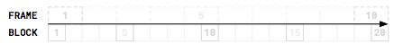

There's more to the picture,
then meets the eye.
Hey hey, my my.
 Neil Young
Neil Young
The idea behind the MarbleDesignSystem
Diagrams have the unique ability to express complex things simply.
Never had reactive programming been made so visual.
Diagrams is transforming information into compelling images
Marble diagrams serve a method for
us to visualize processes over time.
This helps programmers and engineers to understand and design reactive
processes.
The overall goal of the MarbleDesignSystem is to provide a unified way of
reading and creating stream based
diagrams,
in particular one specific type of it, the marble diagrams.
This guide explains all building blocks of the design system step by step and
in detail.
In general we have some main rules that system follows:
-
Consistent
-
Intuitive
-
Easy
-
Detailed
-
Customizable
Consistency
There are several things to follow if you try to create a standard.
One of them is more critical for a positive outcome
than everything else, consistency.
By working with a standardized, reproducible approach
we managed to create a consistent way of drawing marble diagrams.
A set of rules developed over many many iterations, adopted and
simplified to serve as a guideline and blueprint for creating and
using
these diagrams.
Intuitive
As programming with Rx is hard we made sure to keep it intuitive.
By including a lot of people into the process of the creation
of this guide we collected a lot of personal feedback to improve the
system.
To make sure we consider a common way interpretation we created
several public polls
we were collected and evaluated the general understanding.
This helped us to make our system intuitive to understand.
Easy
As mindset behind the system are several principles.
One of them is “Easy to adopt and create”, which means we want to
provide a way for everybody to
read and create marble diagrams.
To achieve this we create all diagrams in either googleSlides oder Powerpoint.
We believe this two options enable a big group of people to edit
and draw these diagrams.
Detailed
Marble diagrams exist since a long time now.
As there was no well thought standard out there and not all edge cases
considered,
people started to create their own solutions to visualize processes.
These let to a variety of different ways of drawing these diagrams.
Some of the better approaches were able to visualize more complex prozesses,
but there is one essential thing which nobody considered yet,
but which is most critical to understand processes based on Rx. The internal
behavior of operators.
This system is not only providing a consistent, standardized way of drawing
marble diagrams,
but also offers a way to visualize the internals of operators.
Of course based on the systems rules it selfe.
Technically Correct
All diagrams should be able to mirror the source code as accurate as possible, therefore the
Design Tokens
-
Unit
-
Color
-
Shape
-
Line
-
Size
Components
-
Time
-
Time progress
-
Moment in time
-
Consumer Event
-
Notification
-
Complete
-
Error
-
Operator
-
Operator Context
-
Operation
Design Tokens
UNIT



The unit for width and height in marble diagrams is called a block.
A block is a rectangle with equal width and height.
Positioning of objects and text is also measured in blocks.
To have a convenient unit we use em with the base of 1 blok.
Sometimes time matters. The smallest unit of time is called frame.
A frame is a unit for time and expressed in width. 1 frame equals to the width of 2 blocks.
The unit for width and height in marble diagrams is called a block.
A block is a rectangle with equal width and height.
Positioning of objects and text is also measured in blocks.
To have a convenient unit we use em with the base of 1 blok.
Sometimes time matters. The smallest unit of time is called frame.
A frame is a unit for time and expressed in width. 1 frame equals to the width of 2 blocks.
FONT-FACE
The design guide doesn’t limit the choice of font.
Only a few limitations are suggested.
Serif font-face and mono-space letter.
Serif Font-Face
Serif font-face has compared to the serif font-faces less visual noise.
Mono-space
Mono-space font has to be used in the description of observables, operators or in the text of notifications.
This ensures that the with of text is directly proportional to the number of characters and therefore simplifies
the positioning and alignment of text in diagrams.